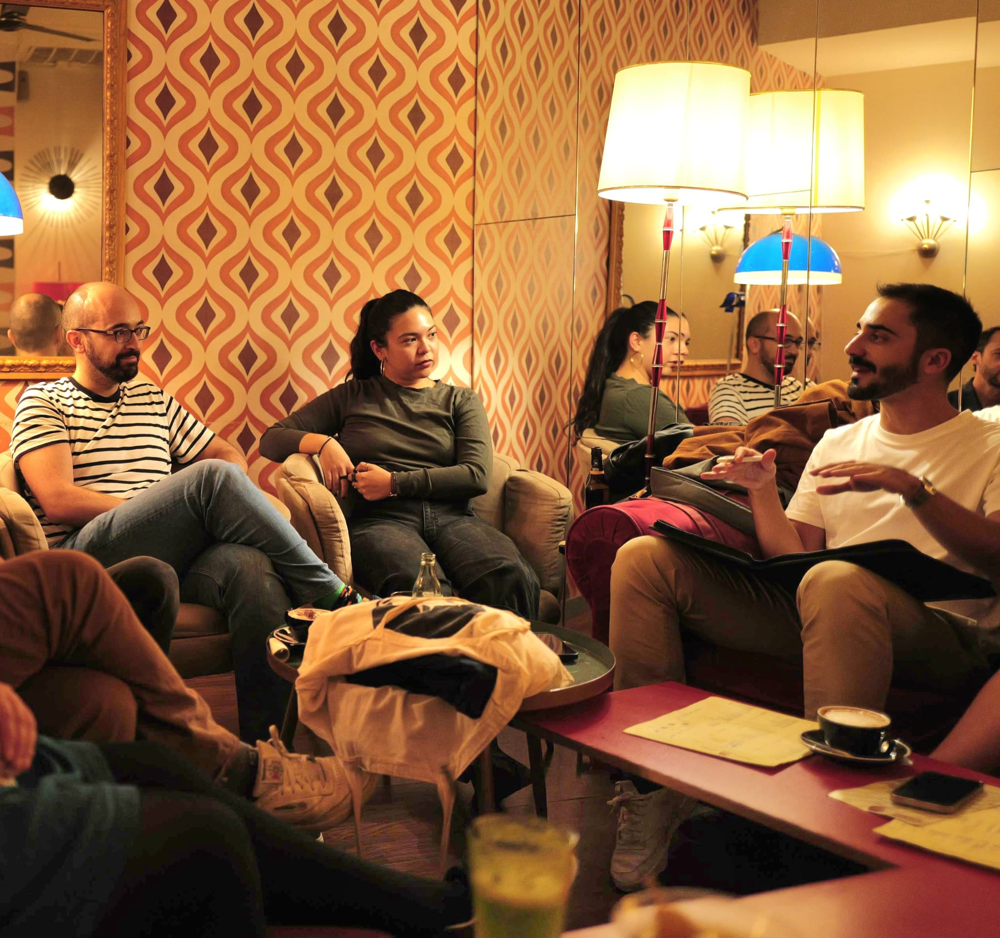
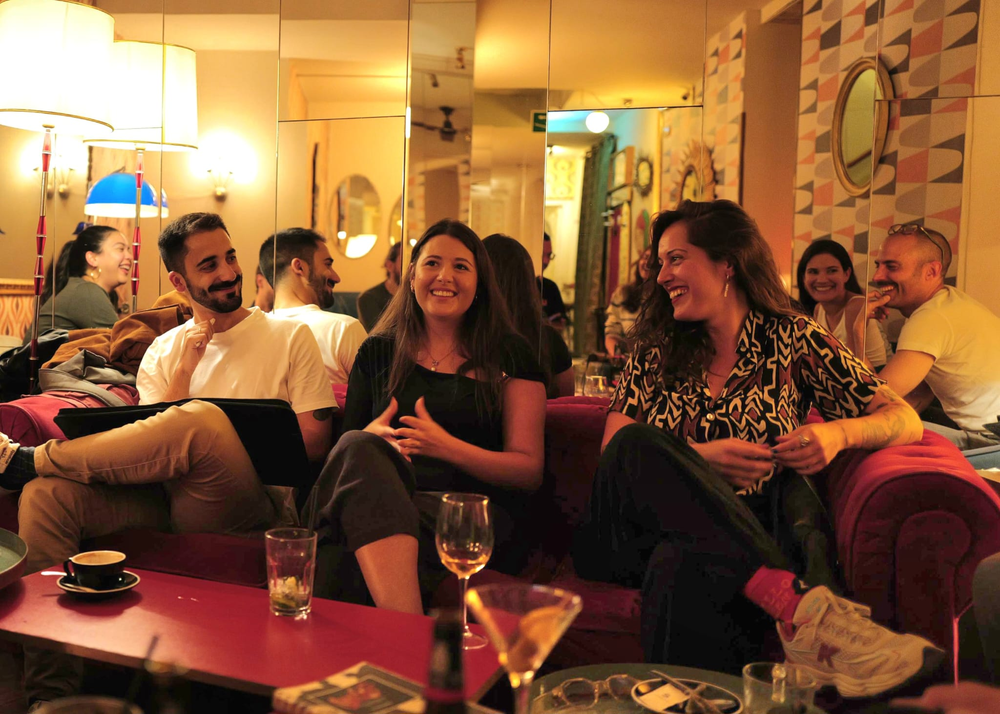
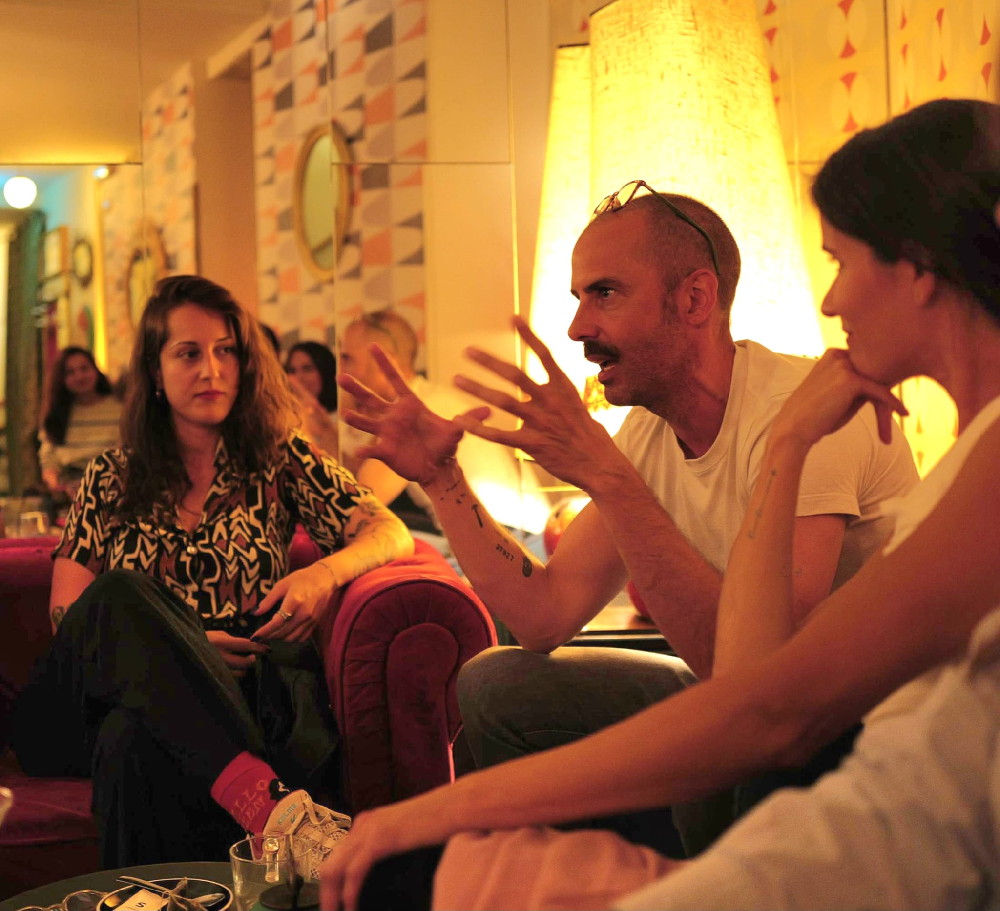
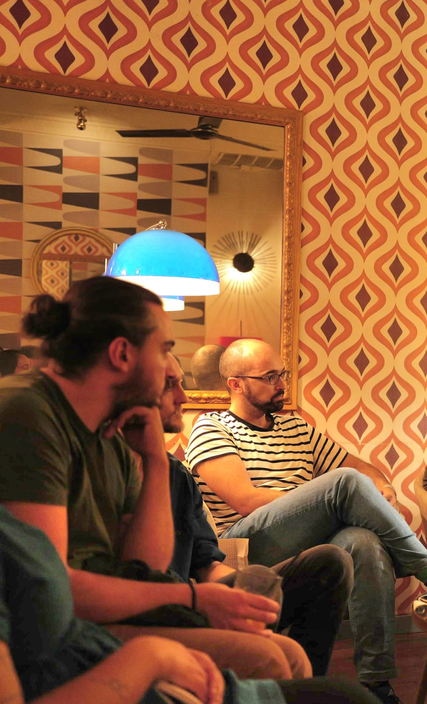

Actividad principal

Sesiones es el origen de Taquilla Siete: una tertulia de cine de unas dos horas que hacemos cada dos semanas en cafés y bares de Malasaña. Nos sentamos a tomar algo y comentamos juntos una película, con calma y sin prisa.
No es una proyección ni una charla dirigida por una sola persona: es una conversación abierta entre quienes vienen, cada uno con su mirada sobre la película del día. Somos un club de perfil amateur: no pedimos grandes conocimientos, solo ganas de compartir.
Las plazas de cada sesión se reparten por Instagram: te contamos cómo más abajo.
← Volver a actividades


Dos horas de tertulia con una estructura sencilla:
Introducción: presentamos la película y su contexto.
Tertulia: la conversación abierta, el corazón de la sesión.
Comentario final y notas: cerramos impresiones y puntuamos la película.
Propuestas y votaciones: elegimos la siguiente entre películas disponibles en plataformas.
Las plazas de cada sesión se reparten por Instagram, así de simple:
El domingo previo a cada sesión publicamos por story las plazas libres.
Responde a la story solicitando una de las plazas antes de que se acaben.
Priorizamos por orden de recepción. Se evitarán perfiles sin fotos o información relevante.